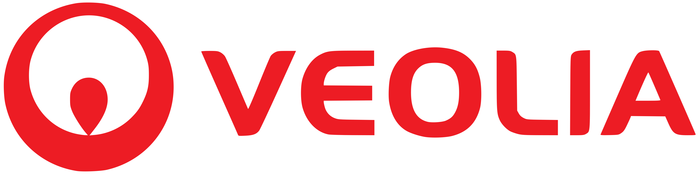
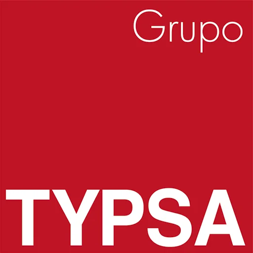
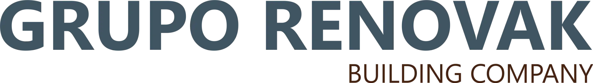
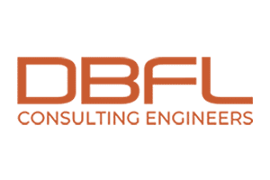

Experiencia profesional
Ingeniero civil de proyectos con experiencia en España e Irlanda, especializado en el desarrollo
y coordinación de proyectos de abastecimiento, saneamiento, drenaje e infraestructuras hidráulicas.
Mi trayectoria combina el diseño y la modelización hidráulica e hidrológica con la elaboración de planes directores de abastecimiento y saneamiento,
la elaboración de cálculos, planos y documentación técnica, la supervisión de obras y la coordinación con equipos multidisciplinares,
administraciones públicas, clientes y contratistas. También cuento con experiencia en carreteras, urbanización, rehabilitación de edificios y
soluciones de drenaje sostenible, utilizando herramientas como Civil 3D, EPANET, SWMM, HEC-RAS, HEC-HMS, GIS y AutoCAD.

Veolia — Aquatec (AGBAR)
Civil Project Engineer
Periodo: noviembre de 2025 - actualidad
Ubicación: Provincia de Murcia, España
- Prestación de asistencia técnica a diferentes Administraciones Públicas.
- Desarrollo de planes locales de abastecimiento y saneamiento, incluyendo el análisis y planificación de infraestructuras municipales de agua y aguas residuales.
- Preparación y desarrollo de proyectos constructivos de abastecimiento, saneamiento, drenaje e infraestructuras hidráulicas.
- Modelización y análisis hidráulico e hidrológico para el diseño y evaluación de redes de agua y drenaje.
- Elaboración de documentación técnica, cálculos, planos, mediciones y entregables de proyecto.
- Coordinación con equipos multidisciplinares y representantes de la Administración Pública.
- Uso de Autodesk Civil 3D, EPANET y SWMM.

TYPSA Group — Exceltic Consulting
Civil Project Engineer · Drainage Project Engineer
Periodo: octubre de 2023 - noviembre de 2025
Ubicación: Valencia, España
- Desarrollo de proyectos internacionales de abastecimiento y drenaje.
- Diseño de redes de drenaje por gravedad, redes de saneamiento, conducciones de distribución de agua y trazados viarios.
- Desarrollo de modelos hidrológicos con GIS, HEC-RAS y HEC-HMS para análisis lluvia-escorrentía y diseño de drenaje.
- Modelización y diseño hidráulico con Autodesk Civil 3D, Storm and Sanitary Analysis, SWMM y EPANET.
- Coordinación con equipos técnicos para la entrega de diseños y planos de ingeniería.
- Aplicación de estándares, normativa y especificaciones de proyectos de Arabia Saudí.

Grupo Renovak Building Company
Site Engineer
Periodo: febrero de 2022 - octubre de 2023
Ubicación: Alicante, España
- Supervisión de obras de rehabilitación de edificios residenciales.
- Transmisión de la información de planos y especificaciones a encargados, operarios y subcontratistas.
- Control de materiales, trabajos ejecutados y cumplimiento de las especificaciones.
- Seguimiento de los métodos constructivos, costes y planificación de obra.
- Participación en reuniones semanales con la dirección facultativa y los clientes.
- Elaboración de informes sobre planificación, costes y reclamaciones del contratista.
- Supervisión del cumplimiento de la normativa de seguridad y salud.
AYMED Proyectos, Obras y Servicios S.L.
Civil Project Engineer
Periodo: marzo de 2020 - febrero de 2022
Ubicación: Alicante, España
- Trabajo en consultoría especializada en abastecimiento, saneamiento y servicios medioambientales.
- Apoyo a empresas privadas en procesos de licitación pública mediante herramientas GIS.
- Redacción de planes directores de abastecimiento y saneamiento con EPANET y SWMM.
- Apoyo a Ayuntamientos en el análisis de la rentabilidad y el diseño de infraestructuras hidráulicas.
- Planificación de un proyecto para un nuevo astillero en Palma de Mallorca.

DBFL Consulting Engineers Ltd.
Graduate Civil Engineer
Periodo: febrero de 2019 - diciembre de 2019
Ubicación: Dublín, Irlanda
- Participación en proyectos residenciales, industriales y comerciales.
- Diseño de carreteras, abastecimiento y drenaje.
- Diseño de sistemas urbanos de drenaje sostenible (SUDS) y soluciones frente al riesgo de inundación.
- Diseño de tráfico, inspecciones de obra y coordinación con clientes, contratistas y arquitectos.
Waterman Moylan Consulting Engineers
Junior Civil Engineer Technician
Periodo: enero de 2018 - febrero de 2019
Ubicación: Dublín, Irlanda
- Participación en proyectos residenciales, industriales y comerciales.
- Diseño de carreteras, abastecimiento y drenaje.
- Desarrollo de soluciones SUDS y frente al riesgo de inundación.
- Preparación de paquetes de planos técnicos.
Vectalia
Internship Engineer
Periodo: noviembre de 2016 - mayo de 2017
Ubicación: Alicante, España
- Apoyo al ingeniero responsable en proyectos de licitación.
- Preparación de paquetes de planos con AutoCAD.
- Redacción de informes y gestión de inspecciones de obra.
Procays Gestión Territorial
Internship Engineer
Periodo: abril de 2016 - julio de 2016
Ubicación: Alicante, España
- Redacción de informes y registros técnicos.
- Preparación de planos con AutoCAD.
- Gestión de inspecciones de obra.